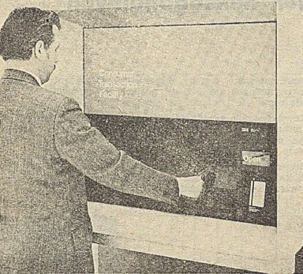

IBM 3614 Consumer Transaction Facility
The ATM that closed its own face on you: a self-closing safety-case shutter, stripe-up card insertion, and a machine that could seize your card and keep it

Overview
The IBM 3614 Consumer Transaction Facility, sold as part of the IBM 3600 Finance Communication System, was announced on 10 August 1973 and withdrawn on 9 March 1981, spanning the first half of the museum's window. It was a through-the-wall or free-standing self-service terminal that let a bank customer do far more than withdraw cash: balance inquiries, deposits, bill payments, and check cashing, all driven by a 40-character display that chained prompts and corrected input errors, with several transactions possible on a single card insertion ('transaction chaining').
The interaction is astonishingly embodied by modern standards. The customer inserts the card with the magnetic stripe facing up — the opposite of every modern ATM, which expects stripe-down — an early, hand-negotiated convention that later machines abandoned. A protective window with a 'safety clutch' covers the entire face of through-the-wall models; it opens only when a card is inserted and closes itself 25 seconds after the last transaction, giving the machine an almost animate sense of receiving you before locking back up. The unit could also physically retain a suspected-stolen card and raise a tamper alarm.
Deployment was theatrical as well as financial: one 3614 stood inside the Smithsonian, where visitors used a simulated bank card to obtain a copy of a pre-Civil War dollar bill, and another sat in an oak-panelled enclosure inside the Pentagon for the Virginia National Bank. Fidelity Bank branded its units 'ABBy (Anytime Banking Benefits You)'.
Deep dive
The signature interaction of the 3614 is its powered protective-window shutter. Across the front of through-the-wall units, a safety-clutch window covers the working face except for the card slot. It opens only after a card is inserted and closes itself 25 seconds after the last transaction completes. The user is therefore physically enclosed in a private transaction with the machine — an early, mechanical version of the privacy glass modern ATMs achieve with angles and tinting.
Unlike modern machines, the 3614 expects the customer to slide the card with the magnetic stripe facing up, so the card's identity is read against the reader's contact geometry from below. It could physically retain a card suspected of being stolen, triggering a tamper alarm — the bank's fraud response was a mechanical act on a piece of plastic in the customer's hand.
All interaction flowed through a compact 40-character display that stepped the user through each function, correcting input errors as it went, in an era before graphical bank interfaces. A customer could chain several transactions on a single card insertion, and optional receipt and deposit modules extended the machine's reach beyond plain cash.
The collection has Quotron II (a Wall Street market-data terminal) and the IBM 5265 POS (a retail register) but no automated-teller or self-service banking artifact. The IBM 3614 fills that gap with an interaction model — a machine that opens its own face to accept your card, then closes it again — unlike anything else on display.